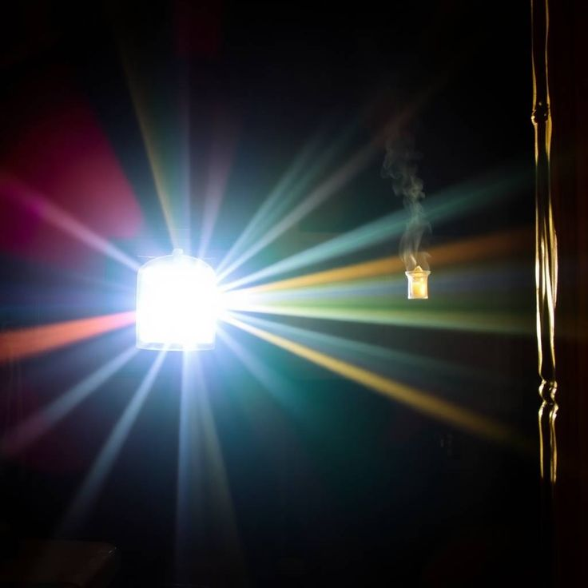
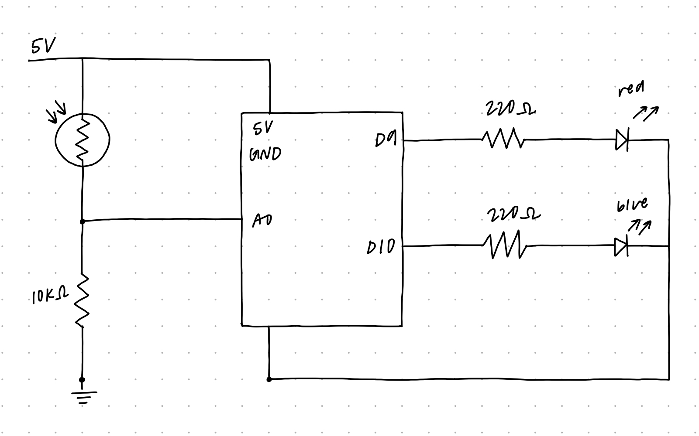
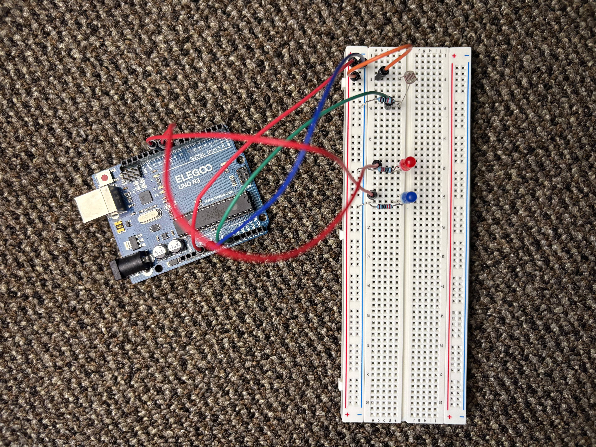
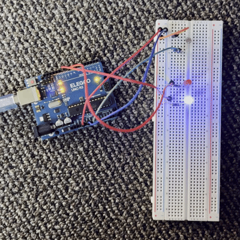
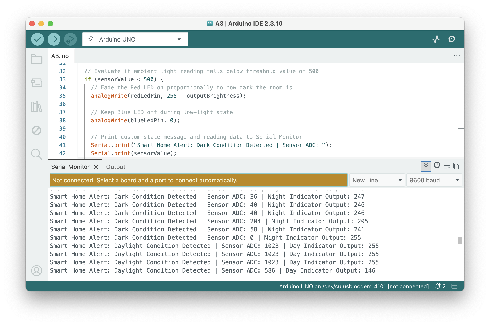
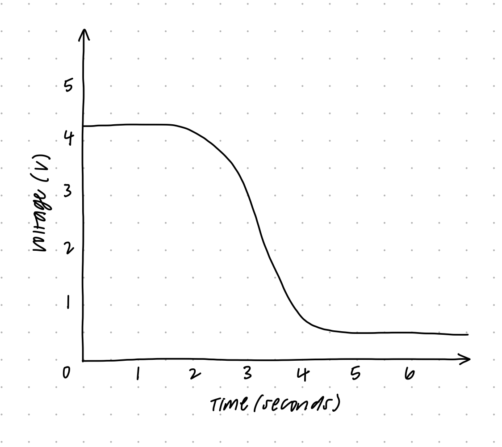

Here is all the documentation for assignment 3!

The circuit uses a photoresistor (LDR) in a voltage divider configuration paired with a 10kΩ fixed resistor connected to analog pin A0. Two separate output LEDs (Red on pin 9 and Blue on pin 10) are connected via 220Ω current-limiting resistors to GND.
To dynamically sense light levels, a photoresistor (LDR) is paired with a fixed resistor in a voltage divider circuit. The voltage $V_{out}$ measured at analog pin A0 is calculated using the voltage divider formula:
Vout = Vin * (R2 / (R1 + R2))
Expected Output Voltages (Vout) at Analog Pin A0:
Vout = 5V * (10,000Ω / (1,000Ω + 10,000Ω)) = 5V * (10 / 11) ≈ 4.55V
Vout = 5V * (10,000Ω / (100,000Ω + 10,000Ω)) = 5V * (10 / 110) ≈ 0.45V
Current Limiting Resistors for Output LEDs:
To safely limit current through the output indicator LEDs and protect the Arduino digital pins:
R = (Vsupply - Vf) / I = (5V - 2.0V) / 0.0136A ≈ 220Ω
Using 220Ω resistors limits current per LED pin to approximately 13.6mA, safely under the Arduino limit of 40mA per pin.

Breadboard wiring overview: Photoresistor pin 1 is connected to 5V (Row 5, Col e/a), pin 2 connects to Row 10 (Col e). The 10kΩ resistor connects Row 10 to Ground. Analog pin A0 samples the midpoint at Row 10 (Col c). Red LED anode is at Row 20 (Pin 9) and Blue LED anode at Row 25 (Pin 10), with 220Ω resistors connected to the GND rail.
// Define the analog input pin connected to the photoresistor voltage divider node
const int sensorPin = A0;
// Define PWM output pins connected to two separate physical LEDs
const int redLedPin = 9;
const int blueLedPin = 10;
// Variable to store the raw 10-bit analog reading from the sensor (0 to 1023)
int sensorValue = 0;
// Variable to store mapped 8-bit PWM value (0 to 255)
int outputBrightness = 0;
void setup() {
// Initialize serial communication at 9600 baud for monitoring system state
Serial.begin(9600);
// Configure the Red LED pin as a digital output
pinMode(redLedPin, OUTPUT);
// Configure the Blue LED pin as a digital output
pinMode(blueLedPin, OUTPUT);
}
void loop() {
// Read the analog voltage level from the photoresistor divider on pin A0
sensorValue = analogRead(sensorPin);
// Map the 10-bit ADC value (0-1023) down to an 8-bit PWM brightness value (0-255)
outputBrightness = map(sensorValue, 0, 1023, 0, 255);
// Evaluate if ambient light reading falls below threshold value of 500
if (sensorValue < 500) {
// Fade the Red LED on proportionally to how dark the room is
analogWrite(redLedPin, 255 - outputBrightness);
// Keep Blue LED off during low-light state
analogWrite(blueLedPin, 0);
// Print custom state message and reading data to Serial Monitor
Serial.print("Smart Home Alert: Dark Condition Detected | Sensor ADC: ");
Serial.print(sensorValue);
Serial.print(" | Night Indicator Output: ");
Serial.println(255 - outputBrightness);
} else {
// Keep Red LED off during high-light state
analogWrite(redLedPin, 0);
// Fade the Blue LED on proportionally to ambient daylight
analogWrite(blueLedPin, outputBrightness);
// Print custom state message and reading data to Serial Monitor
Serial.print("Smart Home Alert: Daylight Condition Detected | Sensor ADC: ");
Serial.print(sensorValue);
Serial.print(" | Day Indicator Output: ");
Serial.println(outputBrightness);
}
// Brief pause to stabilize sensor sampling and prevent excessive serial prints
delay(100);
}
Demonstration of physical execution: Covering the photoresistor transitions the system to low-light mode, fading the Red LED on. Exposing it to light turns off the Red LED and fades the Blue LED on proportionally.

Sample Serial Monitor output verifying real-time 10-bit sensor sampling and mapped PWM output values during state changes.
Yes, the variable resistor (photoresistor) can be placed in either the R1 or R2 position of the voltage divider, but changing its position reverses how the output voltage (Vout) responds to light changes.
When the photoresistor is placed in the R1 position (top half, connected to 5V) and a fixed 10kΩ resistor is at R2:
Vout = 5V * (10,000 / (1,000 + 10,000)) = 5V * (10 / 11) ≈ 4.55V
Vout = 5V * (10,000 / (100,000 + 10,000)) = 5V * (10 / 110) ≈ 0.45V
If you swap them so the photoresistor is in the R2 position (bottom half, connected to GND) with the 10kΩ resistor at R1:
Vout = 5V * (1,000 / (10,000 + 1,000)) = 5V * (1 / 11) ≈ 0.45V
Vout = 5V * (100,000 / (10,000 + 100,000)) = 5V * (100 / 110) ≈ 4.55V
So it works in either position, but putting it at R1 gives higher voltage readings in bright light, whereas putting it at R2 gives higher voltage readings in the dark.

Graph plotting V-measure at pin A0 over time during the demonstration video.
The graph above tracks the voltage measured at pin A0 during my circuit's video demonstration. At the start, under normal ambient light, V-measure stays steady near 4.2V. When I cover the photoresistor with my hand, the resistance rapidly jumps up, causing the measured voltage to drop down close to 0.5V.
On the standard Arduino Uno, analogRead() gives a 10-bit value (ranging from 0 to 210 - 1, or 0 to 1023), and analogWrite() uses 8-bit PWM (ranging from 0 to 28 - 1, or 0 to 255). That's why the original mapping line looks like this:
outputBrightness = map(sensorValue, 0, 1023, 0, 255);
If the system instead used a 16-bit ADC, the input range would scale up to 0–65535 (216 - 1). With a 10-bit PWM output, the output range would expand to 0–1023 (210 - 1).
To adapt to these resolution specs, the updated map() code would be:
outputBrightness = map(sensorValue, 0, 65535, 0, 1023);
This scales down the higher resolution 16-bit sensor input into the broader 10-bit PWM range, allowing for significantly finer brightness control.
I did not use AI tools to complete this assignment.